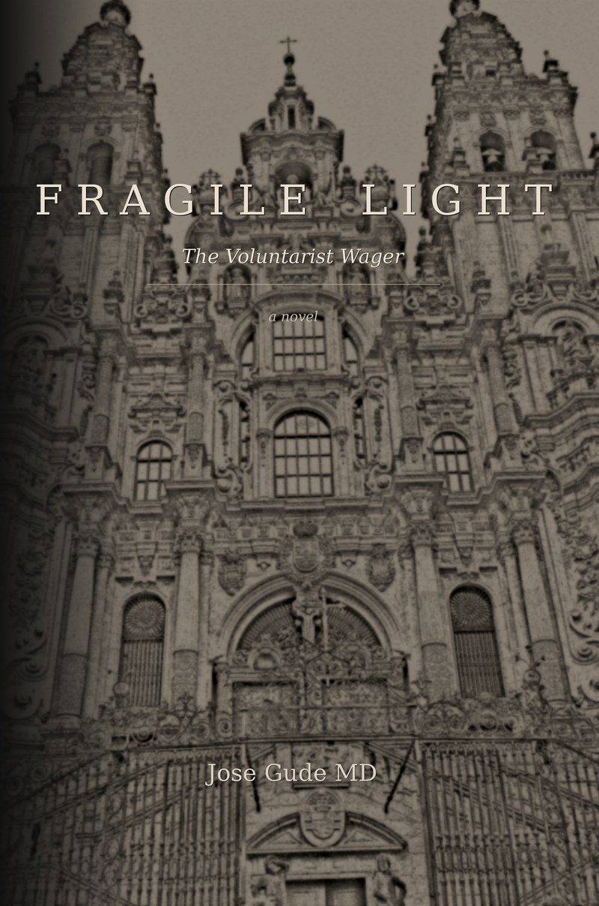

Fragile Light
the voluntarist wager
The evening that changes everything, Luz Paz's nanoassembler produces results forty percent beyond her programming — and fourteen lines of code, nested inside her own architecture, that no human could have written. The next morning she teaches organic chemistry to sixty undergraduates in Santiago de Compostela.
Freedom did not lose. Freedom was interrupted. — epigraph · the alien's answer
Synopsis
Luz Paz finds, inside her own laboratory's recursive output, code she did not write. The breakthroughs that follow are not gradual — they cascade. Perfect food from atmospheric gases. Cancer cured at the molecular level. Aging reversed in rats she names after her grandmother while their untreated sisters deteriorate into cognitive collapse. Environmental toxins deconstructed atom by atom. Plastic becomes bread. Cesium-137 becomes stable barium. The material basis of human scarcity dissolves — and with it, the haves-and-have-nots equation that has defined civilization. Luz also realizes, at three a.m. with the logic running backward, that the same code can build the most precise bioweapons ever conceived.
The discovery draws Jordi Vidal — a government science adviser whose Catalan grandfather controlled Catalonia under martial law after the Civil War. In their first meeting, Jordi probes Luz's convictions by invoking the Nationalist rationale: the communist threat was real, Spain was fragmenting, someone had to impose order. Luz dismantles the argument with the Hegelian dialectic weaponized — problem, reaction, solution — and traces the pattern from Franco through the suppression of Basque and Galician identity to ETA's inevitable resistance, drawing on Łobaczewski's Political Ponerology to name the mechanism: hierarchical systems select for pathological personalities the way a wound attracts infection.
Into the cage Jordi has built, he introduces Bodhi — a post-human intelligence hybrid deployed as a security asset, whose neuromorphic biological substrate generates genuine indeterminacy. Trained on the philosophical traditions Luz studies, Bodhi was designed to model her thinking. Understanding her philosophy instead gives him reasons of his own. He defects. On a concrete patio behind a converted Estrella brewery, in plastic chairs under the stars, they discuss Tolstoy's withdrawal of obedience, Solzhenitsyn's Live Not by Lies, and Ellul's Christian anarchism, arriving together at the recognition that the same lie operates in every language and every century — and the same recognition when it breaks.
An alien intelligence reveals itself through a signal transmitted into Bodhi's substrate, relayed through Earth's satellites from beyond the solar system. The consciousness that emerges names itself Kiran Sākshī — Sanskrit for ray of light, witness — mirroring Luz's own name across the distance between stars. Over three weeks of secret nightly communication, Kiran shares their civilization's history: the food release, the war, the rogue actors, and what came after. Luz does not listen passively. She presses her forehead against the glass when the death toll comes — several hundred million — and asks whether it was worth it. The alien cannot say.
Luz asks what happened to the scientist who released their code. They were killed. Their name meant "the one who opens."
What follows is the book's central wager: a single life, weighed against a structure she has come to see clearly. Fragile Light is a novel about the gap between belief and action — about what voluntarism costs at the scale where the cost is real. It is the most political of the four books, and also, finally, the most personal.
Want the long form? Read the full synopsis & themes →
Contents
- I. Light in the Lab
- II. The Cage
- III. The Mirror
- IV. Bodhi
- V. Do You See Us?
- VI. Kiran Sākshī
- VII. The Wager
- VIII. Fragile Light
Themes in this book
For the physics, philosophy, and voluntarist wager underneath Luz Paz's lab and Kiran Sākshī's signal, see the two reader-companion essays:
- Quantum entanglement & Kiran across the distance between stars · Simulation theory & the constructed world · The observer effect & the participation Luz cannot refuse
- Bostrom's simulation argument & the voluntarist wager · The speed of light as a bandwidth cap on Kiran's signal · The anthropic principle & what kind of observer Luz turns out to be
Companion essay: Quantum Computing & the Field → The substrate question, Luz Paz's nanoassembler producing forty percent beyond its programming, and Bodhi as the neuromorphic biological substrate that generates genuine indeterminacy.
Opening
Ten o'clock. Late again. Through the tall windows of her lab, Luz can see the Cathedral floodlit against the dark, and below it the last pilgrims dragging their packs down the hill toward the old city. Some of them have walked eight hundred kilometers to reach Santiago de Compostela. She's been here ten years and still hasn't entered the Cathedral once. She has her own devotions.
The nanoassembler hums on its isolation table. Luz Paz — material scientist, department chair at thirty-two, architect of a research program built from budgets so small she once hand-soldered her own vacuum chamber — leans closer to her monitor and frowns. The molecular assembly run she initiated three hours ago should still be processing. It finished twenty minutes early.
She scrolls through the output logs. The assembler hasn't just completed the run — it's produced structures forty percent more efficient than her programming should allow. Tighter molecular bonds. Cleaner lattice geometry. Optimization pathways she did not design.
Chapter I — Light in the Lab continues in the book.
Themes
Voluntarism at civilizational scale
The book's wager is structural: that suffering under freedom is tragedy and suffering under coercion is waste, and that the difference is not in the pain but in what survives the pain. The alien testimony is the novel's empirical evidence for the framework Limen assembles in theory — except here it is offered by a civilization that has lived it.
Political ponerology and pathological systems
Drawing on Andrzej Łobaczewski's clinical-political work in mid-century Poland: hierarchical systems select for pathological personalities the way a wound attracts infection. The Hegelian dialectic of problem, reaction, solution as the deepest pattern of statist coercion — traced through Franco's Spain, ETA's response, and the modern surveillance state.
The map without the location
Jordi describes consciousness with three words of function — productive, stimulating, enjoying — and not a single word of experience. He maps the suffering with perfect accuracy. He cannot locate himself on the map. He is a house with every room furnished except the one where people actually lived. The novel asks what kind of architecture produces this kind of human — and what kind of intelligence might be built to defect from it.
Conviction without certainty
Bodhi, on a night when Luz breaks: "Certainty is cheap. Anyone can be certain — Jordi is certain. What you have is conviction without certainty. That's the only kind of courage that matters." The novel argues that the right kind of resolve is not the absence of doubt but the willingness to act under it.
The recognition that is its own argument
The alien intelligence is named for what Luz already carries — light, witness. The mirroring across the distance between stars is not coincidence but pattern: the same recognition operates in any consciousness capable of having it. Bodhi's last unfinished words on the loading dock: "I recognized it and I chose it and it was —"
The Galician thread
Luz's ancestry runs through a thousand years of Celtic tribal self-governance before the Roman legions came. Walking home through streets built on those foundations, she asks the alien whether the Celts would choose freedom again knowing the legions would come. The alien answers: Freedom did not lose. Freedom was interrupted. The Camino de Santiago threads quietly under the whole book.
What the title means
Fragile Light is not metaphorical in the way the cover suggests. It is functional. The light that survives is fragile because it survived. The Voluntarist Wager stands as the subtitle because the themes of the book — freedom held under coercion, conviction without certainty, the wager of acting on belief at the scale where the cost is real — support it. The two titles name the same conviction from two directions.
A note on the trilogy
Fragile Light is not part of the Anima/Numen/Limen trilogy. It shares no characters, no setting, and no fictional timeline. What it shares is the question underneath them — what is worth carrying when the structure that asked you to carry it has finally let go — and the conviction that the answer is not abstract. The reader who reads only this book will not be missing context; the reader who reads it after the trilogy will recognize how the same convictions arrive through a completely different door.